Vanderbilt · Learning Series · ATD facilitator guide · print edition
Talent Calls, Sharper, the facilitator guide

Run of show
| Screen | Full (min) | Core (min) |
|---|---|---|
| Welcome / QR | 2 | 1 |
| Objectives | 1 | 1 |
| The Chancellor's charge | 3 | <1 |
| Agenda | 1 | — |
| 01 · Instruments, not verdicts | 8 | 6 |
| Manifesto | 1 | — |
| 02 · The Rubric Lab | 8 | 6 |
| 03 · Skills, gaps, and growth | 8 | 6 |
| Recap quiz | 3 | 3 |
| Capstone · My talent toolkit card | 5 | 5 |
| Glossary | 1 | — |
| Closing · commitment | 2 | 2 |
| Total | 43 | 30 |
Audience
Part of the CHART Program and the Manager Voyage. Leaders and managers who hire, run talent reviews, plan succession, or own team capability: anyone whose decisions shape careers. 8 to 24 works best; drills run in pairs. Partner with HR before applying anything candidate-facing; this session says so repeatedly and means it.
Room setup
Projector plus presenter device; learners on their own devices via the Welcome-slide QR; seating that pairs easily. Virtual: breakouts of 2. The norm, stated in minute one: roles and rubrics, never names, and nothing typed leaves the screen.
Materials
- Projector or large display and the facilitator link open (this edition)
- Facilitator laptop with arrow keys or clicker; all notifications off
- Learner devices (BYOD) joining via the welcome-slide QR
- A few printed cheat sheets (cheatsheet.html) for anyone without a device
- Printed toolkit cards (worksheet.html) as the no-device fallback
- One real (or realistic) job description on hand for the demo moments
A week before
- Run both editions start to finish, doing every exercise, including the Rubric Lab honestly.
- Build one real instrument yourself, an interview kit or a 9-box rubric, so your examples are lived. You'll show structure, never contents.
- Send the pre-work invite (template on this page): bring one upcoming talent decision, held privately.
- Check in with your HR partner on VU's current guidance for AI in candidate-facing processes, so your answers are current.
The day before
- Test the projector with the facilitator link; confirm the notes rail is readable.
- Scan the welcome QR with your own phone; it must land on the learner edition.
- Run one trainer round and one full lab pass so you can drive them without looking.
- Print 5 to 10 cheat sheets and toolkit cards.
30 minutes before
- Welcome slide up as people arrive.
- Close every other tab; silence the machine.
- Write 'ROLES AND RUBRICS, NEVER NAMES' where the room can see it.
- Test arrow-key navigation and one interaction.
When things go sideways
If Projector or the site fails mid-session: Whiteboard the course: the instruments-verdicts line, the 9-box with anchors, and the grow-borrow-hire frame all draw in seconds. The lab becomes a group walk-through with room votes; the capstone moves to the printed card.
If Learner devices can't join: Run facilitator-only: trainers on the projector with A/B/C hand votes; the capstone moves to paper.
If Someone starts discussing a real, identifiable person or a live case: Protect the norm immediately and warmly: 'Hold that; roles and rubrics, never names. The instruments work on patterns, not cases.' Live cases with legal or HR texture get routed to HR at the break, never adjudicated from the front of the room.
If The room includes someone whose unit already uses an AI screening vendor: Don't relitigate the procurement. The frame: vendor tools for employment decisions carry audit and explainability obligations, and the manager's discipline is the same either way: know what the tool does, keep the verdict human, and be able to explain any outcome. Route specifics to HR.
If A learner argues AI scoring is LESS biased than humans: Give the honest version: sometimes true against unstructured human judgment, and the comparison that matters is against structured human judgment with anchored rubrics, which is what this course builds. AI scoring also concentrates bias at scale, can't explain itself, and carries regulatory weight. Better instruments beat both bad options.
Tough questions, ready answers
Q: If AI can screen a thousand resumes in a minute, why wouldn't we use that?
Speed is real, and so is what the speed does: one biased pattern applied to a thousand people identically, with no one able to explain a single rejection. Automated screening is now regulated territory in a growing list of jurisdictions for exactly that reason. The defensible version keeps AI on the instrument side: tighter criteria, better questions, sharper anchors, so the humans doing the screening are consistent. If a screening vendor is ever used at VU, that's an HR decision with audit obligations, not a manager's tool choice.
Q: Isn't 'culture fit' a legitimate thing to hire for?
What people usually mean by it is legitimate: will this person collaborate well, handle our pace, treat colleagues well. The phrase is the problem: undefined, it becomes 'is this person like us,' which is how teams stay homogeneous. The fix is the camera test: convert 'fit' into observable behaviors, 'asks for help before deadlines slip,' 'disagrees without heat,' and interview for those. Values-add beats lookalike-fit, and it's also defensible.
Q: Can I at least use AI to summarize interview notes or reference calls?
In approved tools, de-identified, as a draft: yes, and it's genuinely useful. The discipline is the same as everywhere else in this course: the summary is an instrument, you verify it against your actual notes, and the hiring conversation works from evidence, not from the summary alone. Names and identifying details stay out of anything unapproved, always.
Q: My team is tiny. Do I really need rubrics and anchors for two hires a year?
Small teams need them more: every hire is a bigger fraction of the team, and small samples are where gut feel fails quietest. The good news is the cost collapsed: the interview kit that used to take a day of committee work is now a 45-minute build with AI drafting and you verifying. Two hires a year deserve 45 minutes.
Copy-paste templates
Pre-work invite (paste into the calendar invite)
Subject: Before our Talent Calls, Sharper session. One thing to bring: one talent decision on your horizon, a role you'll hire for, a talent review coming up, a succession question, a skills gap you can feel. You will never be asked to name people; every exercise runs on roles and rubrics, and everything you type stays on your screen. That's it, no reading, no tools to install.
7-day pulse (send one week after)
Subject: One week later, did the instrument get built? Three quick lines, reply whenever: 1) Did the 45-minute build session from your card happen? 2) Could a stranger score with what you built, and did every criterion pass the camera test? 3) Did everything stay in approved tools, with HR looped in where it touches candidates? Replies come to me only.
After the session
Seven days out, send the pulse: 'Did the build session happen? Which instrument, and could a stranger score with it? Did everything stay in approved tools?' The count of instruments actually built is the program's headline Level 3 metric.
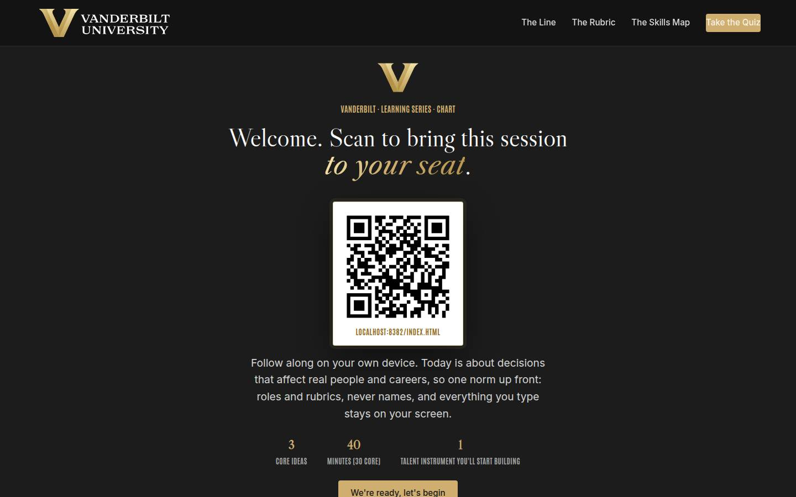
Welcome / QR Full 2 min · Core 1
Get learners in on their own devices and set the norm for high-stakes people material.
Say
“Welcome. Scan the code before we start. Today is about the highest-stakes decisions you make, who gets hired, promoted, developed, and the discipline that lets AI make those decisions more consistent without ever letting it make them. Ground rule for the whole session: roles and rubrics, never names, and everything you type stays on your screen.”
Do
- Slide projected as people arrive; phones up before you speak.
- State the norm once, clearly: roles and rubrics, never names.
Validate: Most of the room has the deck open; the norm gets a nod.
Watch for: Anyone hoping this is a tool tutorial. The frame: this is a decision-quality session that happens to use AI.
Transition: “Here's the contract.”
Core path: Core: one scan prompt, the norm stated once, move on.
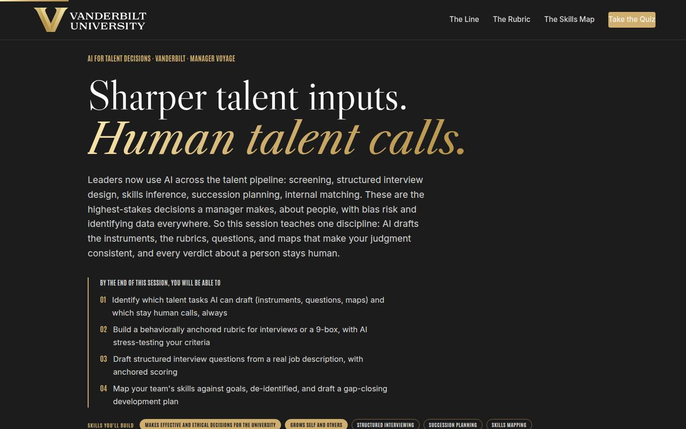
Objectives Full 1 min · Core 1
Set the contract: four capabilities, ending in one instrument with a build date.
Say
“Four things by the end: you'll know which talent tasks AI drafts and which stay human calls, always. You'll be able to build a rubric with real anchors, for interviews or the 9-box. You'll know how to turn a job description into a structured interview kit. And you'll be able to map your team's skills and draft the gap-closing plan, all de-identified, all in approved tools.”
Do
- Read the four objectives briskly.
- Land the frame once: instruments drafted, verdicts human.
Validate: Learners can say what the capstone is (an instrument with a build date).
Watch for: Vendor-tool questions arriving early; park them for the contingency answer.
Transition: “One minute on where this sits in the university's plan, then the three ideas.”
Core path: Core: objectives 1 and 2 out loud.
The Chancellor's charge Full 3 min · Core <1
Anchor instruments-not-verdicts in the Chancellor's vision so talent craft reads as institutional work, not admin.
Say
“One minute of altitude before the craft. The Chancellor's vision has no hedge in it: Vanderbilt will define the great university of the 21st Century and be it, operating at uncommon speed, agility, and scale. Every part of that vision runs through talent: who we hire, who we grow, who we trust with the bold bet. That makes today's discipline institutional work: AI drafts the instruments, the kits, rubrics, and maps, and every verdict about a person stays human, signed, and defensible. Dare to grow includes daring to make talent calls you can explain out loud.”
Do
- Read the vision sentence off the slide and let it land.
- Walk the three focus areas, one team translation each.
- Point at the flywheel: it turns on talent, and instruments decide whether talent gets recognized and grown.
Validate: Nods at the team-translation lines; no discussion needed here.
Watch for: The urge to teach strategy; this page is a frame, and the three ideas are waiting.
Transition: “Now the three ideas, in order.”
Core path: Core: under a minute; read the vision sentence, gesture at the three focus areas, and move on.
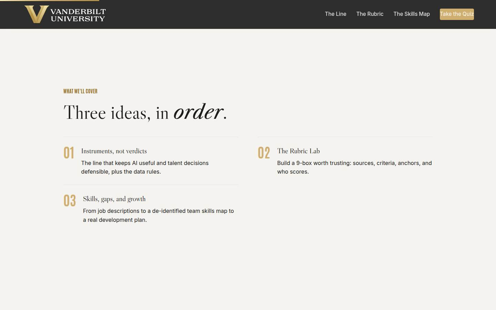
Agenda Full 1 min · Core skip
Orient: the line, the rubric, the map.
Say
“The arc: first the line that keeps all of this defensible. Then the deepest practice block, building a rubric worth trusting. Then the skills map, and what to do about the gaps it shows you.”
Do
- Walk the three items in one breath each.
Validate: None needed.
Watch for: Don't teach here.
Transition: “The line first, because everything hangs on it.”
Core path: Core: skip; the deck carries it.
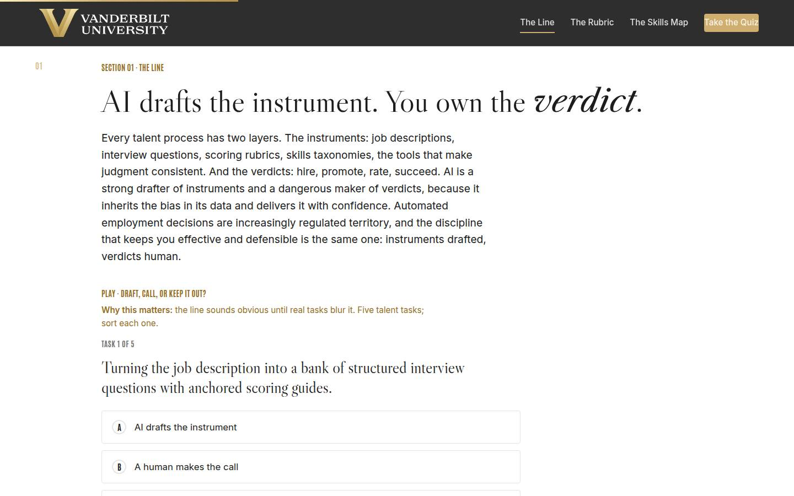
01 · Instruments, not verdicts Full 8 min · Core 6
Install the instruments-verdicts line and the non-negotiable data rules for talent work.
Say
“Every talent process has two layers. Instruments: the job description, the interview questions, the scoring rubric, the skills taxonomy, everything that makes judgment consistent. And verdicts: hire, promote, rate, succeed. AI is a strong drafter of instruments and a dangerous maker of verdicts, because it learned from history, and talent history has patterns nobody wants repeated at scale, delivered with confidence, unexplainable on challenge. So the line for everything today: AI drafts the instrument, you own the verdict. And the data rule is at its strictest here: resumes, reviews, ratings, anything with a name, red light, never in unapproved tools. Candidate-facing work runs with HR, in HR's systems.”
Do
- Land the two layers: instruments (rubrics, questions, maps) and verdicts (hire, promote, rate, succeed).
- Run Draft, Call, or Keep It Out: five tasks, sort each.
- Walk the traffic light card and be blunt: resumes, reviews, and names are red in unapproved tools; candidate-facing work runs with HR.
- Run the pair activity: the last talent decision, where instruments ended and verdict began.
Ask
“Think of the last talent decision you were part of. Where exactly did the instruments end and the verdict begin, and was any part of the verdict quietly delegated to a score or a screen?”
Expect:
- Screening cutoffs that nobody remembers deciding
- A rating that came out of a tool and was never questioned
- Honest 'the instruments barely existed; it was mostly judgment'
Respond: For the no-instruments confession: 'That's most rooms, and it's the opportunity: the verdict was always yours; today makes the instruments cheap.' For the quiet delegations: 'Notice nobody chose that; it accreted. Naming it is how you take it back.'
Debrief: Instruments drafted, verdicts human, red-light data in governed systems only. Every failure story in this space breaks one of those three.
Validate: 4+ of 5 on the trainer; the room can state where the red line sits for talent data.
Watch for: The learner who wants efficiency arguments litigated. Acknowledge the pull, then anchor: the failures are all instruments-became-verdicts stories, and regulators have noticed.
Transition: “One sentence to hold, then the build.”
Core path: Core: trainer as room votes, traffic light at full strength, pair activity becomes a solo reflection.
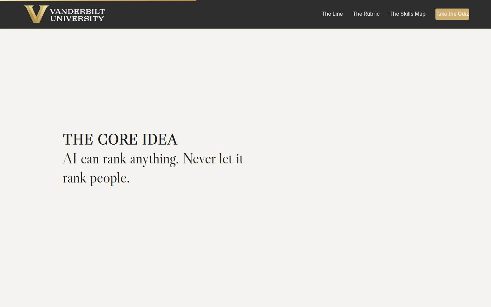
Manifesto Full 1 min · Core skip
One beat of stillness on the core idea.
Say
“AI can rank anything. Never let it rank people.”
Do
- Let the line animate; read it once, then advance.
Validate: None; pacing.
Watch for: The urge to talk over it.
Transition: “Now the deepest practice block: a rubric worth trusting.”
Core path: Core: skip; say the line as you pass it.
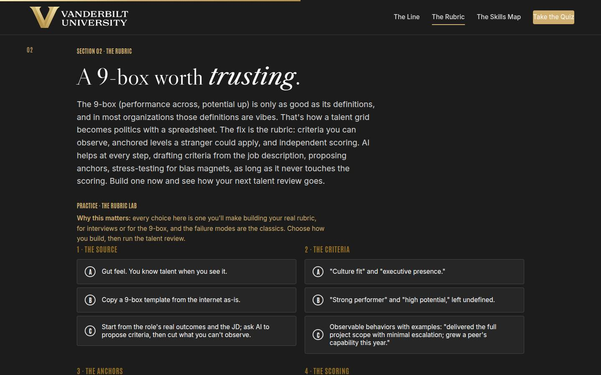
02 · The Rubric Lab Full 8 min · Core 6
Run every learner through building a defensible 9-box rubric: source, criteria, anchors, scoring.
Say
“The 9-box is performance across, potential up, and in most organizations the definitions behind it are vibes, which is how a talent grid becomes politics with a spreadsheet. The fix has three parts: criteria you can observe, anchors a stranger could apply, and independent scoring. AI accelerates all three, drafting criteria from the role's real outcomes, proposing anchors, flagging the bias magnets like culture fit and polish, and it never touches a placement. The lab gives you the four build choices; choose honestly and see how your talent review goes.”
Do
- Frame the 9-box problem in one line: undefined labels make it politics with a spreadsheet.
- Send them into the Rubric Lab: four choices, then run the talent review.
- Ask for tier hands; have one weak-tier learner read their coaching aloud.
- Push the rerun for anyone below strong.
- Run the quick check (what makes a placement defensible), and time permitting the anchor-writing pair drill.
Ask
“For those below strong: which build choice cost you the review, and does your real process share it?”
Expect:
- Undefined labels: 'strong performer' doing the work of a definition
- Solo scoring in one sitting
- An honest 'our real 9-box is the weak tier'
Respond: Treat the honest answer as the room's win: 'Most are. The repair is cheap now: one build session, criteria from the roles, anchors verified against real work, and independent scoring at the next review.'
Debrief: Anchored, observable, independently scored, and AI never places anyone. The same build makes your interview kit; the Go deeper has the recipe.
Validate: Every learner completes a lab run; most reach strong on a rerun; the quick check lands.
Watch for: Learners treating the lab's AI-scores option as obviously wrong while defending an equivalent practice at home ('the tool just suggests ratings'). Name the equivalence gently.
Transition: “From judging the people you have to growing the capabilities you need.”
Core path: Core: one lab run (rerun for weak tier only), quick check stays, anchor drill cut.
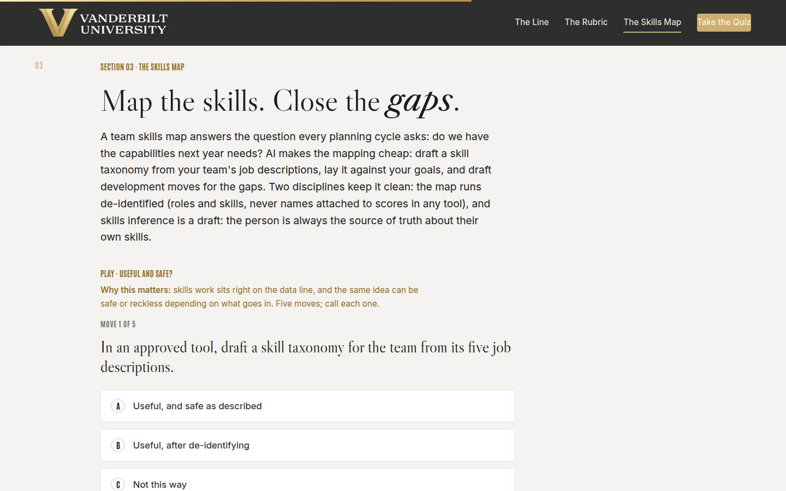
03 · Skills, gaps, and growth Full 8 min · Core 6
Teach the de-identified skills map and the grow-borrow-hire gap plan, with skills inference held as a draft.
Say
“A skills map answers the planning question every cycle asks: do we have what next year needs? The recipe keeps it cheap and clean. Taxonomy drafted from your team's job descriptions, in an approved tool. Self-ratings from the people themselves, because they are the source of truth about their own skills and inference is only ever a draft. Then the de-identified map, roles and levels, no names attached to scores in any tool, against next year's goals, and AI drafts the gap list. For every gap, three possible closes: grow, borrow, or hire. And one boundary from the succession world: AI drafts the profile a key role requires; it never names the successor.”
Do
- Walk the recipe: taxonomy from JDs, self-ratings (people are the source of truth), de-identified map against goals, grow-borrow-hire per gap.
- Run Useful and Safe: five moves, call each.
- Land the succession point from Go deeper: profiles yes, names never.
- Run the pair activity: one gap, three closes.
Ask
“Name one skill your team will need more of next year. What's the grow close, the borrow close, and the hire close?”
Expect:
- Data and AI skills dominate the gaps
- Grow and borrow turn out more realistic than hire
- Someone realizes they don't actually know the team's current skills
Respond: For the 'don't know': 'That's the map's whole point, and step two is asking, not inferring. Your people can tell you in a week what a model would guess at badly.' For the rest: name the pattern, most gaps close by growing and borrowing, which is why the development conversation skills matter more than the req.
Debrief: Map de-identified, inference verified by the person, gaps closed by grow-borrow-hire, succession by profile. Instruments everywhere, verdicts nowhere but human.
Validate: 4+ of 5 on the trainer; pairs produce a gap with all three closes sketched.
Watch for: Excitement about inference ('AI can just tell us everyone's skills'). Hold the line: inference drafts, people verify, and nobody's development gets decided by a guess.
Transition: “Quiz, then the card that puts a date on your first instrument.”
Core path: Core: recipe verbatim, trainer stays, pair activity becomes a solo sketch.
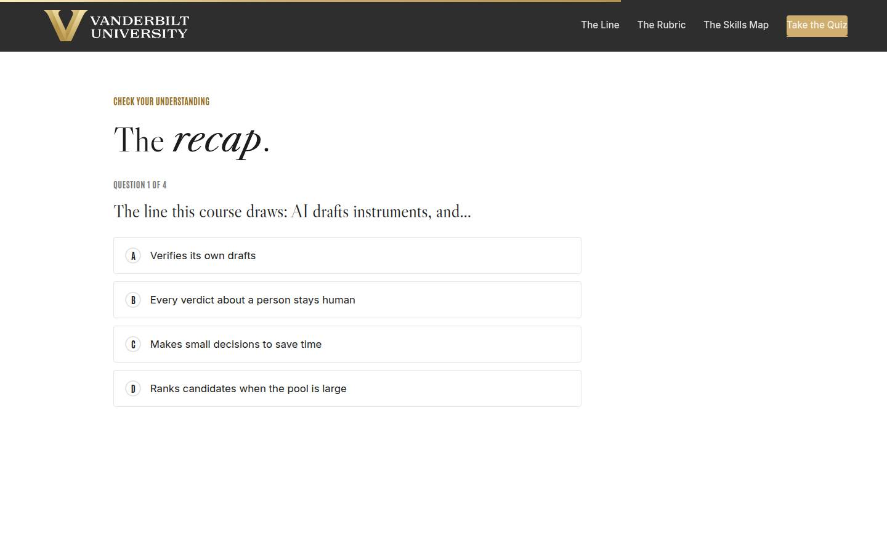
Recap quiz Full 3 min · Core 3
Score the session's knowledge against the objectives before the capstone (Kirkpatrick Level 2).
Say
“Four questions, one per big idea. The systems check before the card.”
Do
- Everyone takes it on their own device, all four questions.
- Hands for 3-or-better; 30-second reteach on anything missed.
Validate: Room mode at 3/4 or better.
Watch for: Racing; it's the check before the card.
Transition: “Now the part that changes your next talent decision.”
Core path: Core: keep at full length.
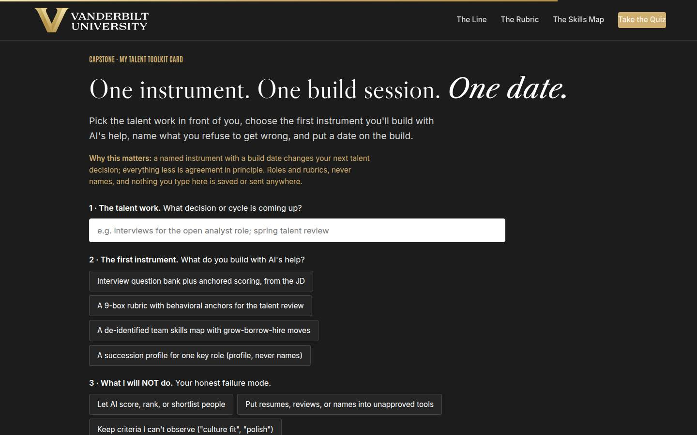
Capstone · My talent toolkit card Full 5 min · Core 5
Convert the session into one dated instrument build. The transfer artifact and Level 3 seed.
Say
“Pick the talent work actually in front of you: the open role, the spring review, the succession question, the gap you can feel. Choose the first instrument: the interview kit, the 9-box rubric, the skills map, or the succession profile. Then the honest field: what you will NOT do, because you know your failure mode. And the date for the 45-minute build session. An instrument with a build date changes your next decision; agreement in principle changes nothing.”
Do
- Frame it: one instrument, one build session, one date.
- Repeat the privacy norm before anyone types.
- Give quiet time; circulate: everyone has a talent decision coming.
- Point at the NOT field as the honest one.
Ask
“What's most likely to make you skip the build session, and what's your plan for that?”
Expect:
- The decision will arrive before the instrument does
- Nobody else on the panel will use it
- HR already has templates
Respond: Racing the decision: 'A 45-minute build beats an unstructured decision made calmly.' Lone user: 'Score independently with it anyway; one anchored scorer changes the calibration conversation.' HR templates: 'Great, start from theirs; your build session becomes an adaptation session, with HR delighted.'
Debrief: One instrument, built and verified, and your next 'why that call?' gets answered with anchors and examples. That's the whole return.
Validate: Every learner builds a card (all four fields).
Watch for: Instrument-shopping (picking the impressive one over the imminent one). The right instrument is for the decision actually coming.
Transition: “Reference shelf, then the send-off.”
Core path: Core: protect at full length; never cut the capstone.
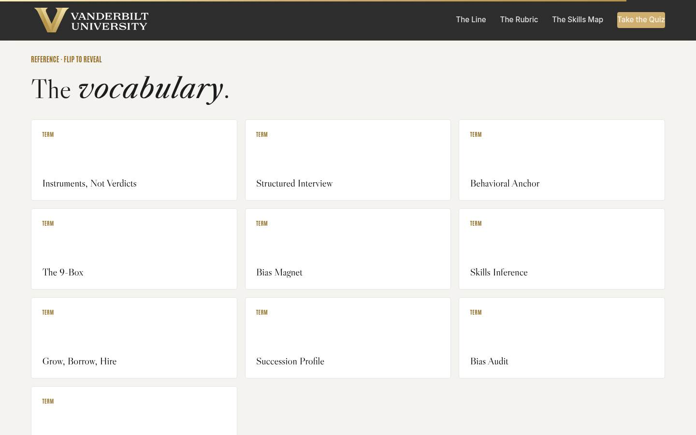
Glossary Full 1 min · Core skip
Signpost the reference layer.
Say
“Every term from today lives here, including bias magnet, for the next time culture fit shows up in a debrief.”
Do
- Flip one card (Bias Magnet flips well).
- Tell them it's here whenever they need it.
Validate: None; reference.
Watch for: Don't tour the cards.
Transition: “Last slide. One build session left.”
Core path: Core: skip; point verbally from the close.
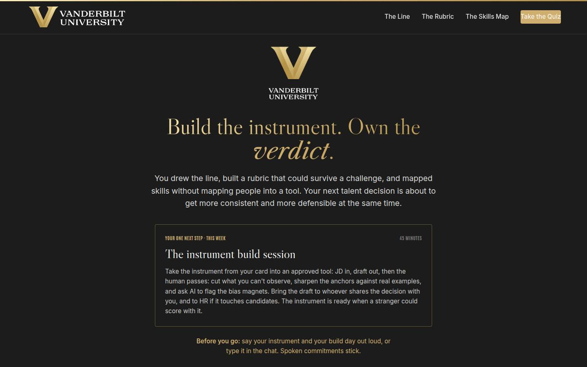
Closing · commitment Full 2 min · Core 2
Convert cards into spoken commitments and capture the Level 1 check.
Say
“The whole session in one breath: instruments drafted, verdicts human, red-light data in governed systems, criteria that pass the camera test, anchors a stranger could score with, inference verified by the person, gaps closed by grow-borrow-hire. You have a card. Say your instrument and your build day out loud; spoken commitments stick.”
Do
- Read the featured next step: the build session, with the stranger-could-score standard.
- Fist-to-five on confidence; note the number.
- Commitment round: instrument and build day, out loud or in chat.
- Point at the cheat sheet and toolkit card; the 7-day pulse is coming; stop on time.
Validate: Fist-to-five mostly 3+; a majority state an instrument and a day.
Watch for: Cards without dates; the round catches them.
Transition: “Go build the instrument. Your next talent decision will thank you, and so will the person on the other side of it.”
Core path: Core: fist-to-five plus a fast round.
Generated from facilitator/notes.json. The on-screen facilitator edition lives at ./ alongside this guide.